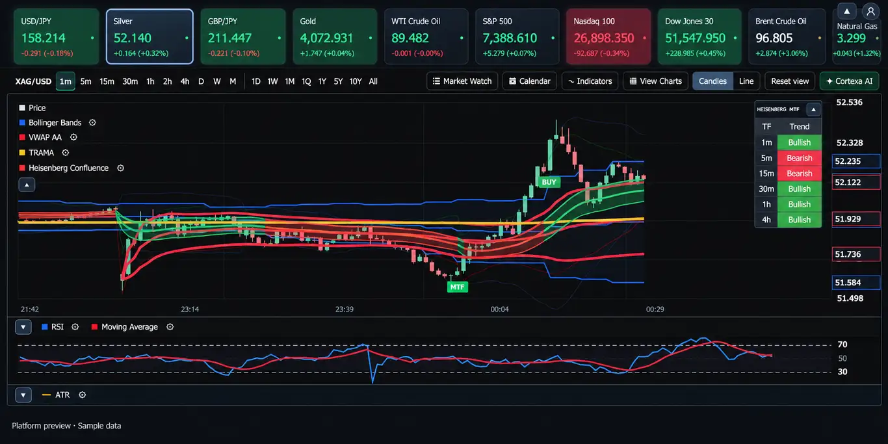
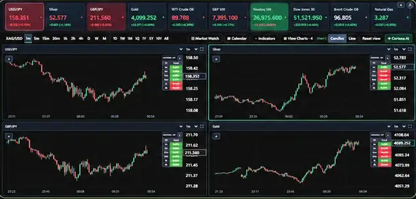
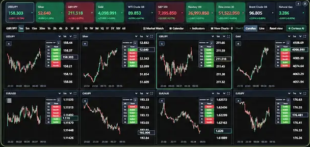

Room to see
what price is doing.
A generous chart with clear crosshairs, quick timeframe controls and collapsible panels. Keep the context. Lose the visual noise.
1m5m15m30m1h4h1D
A different perspective. One click away.
Your chart. Your indicators. Your economic calendar.
A focused trading workspace built around what matters.

Platform preview · Sample dataStop jumping between charts, watchlists and news sites. Bring your daily tools into one considered workspace.
A generous chart with clear crosshairs, quick timeframe controls and collapsible panels. Keep the context. Lose the visual noise.
Keep four chosen markets in view. Open Market Watch to switch pairs, metals, indices or energy without crowding your dashboard.
VWAP AA, TRAMA, Bollinger Bands, RSI and more. Add the indicators you want, adjust inputs and styles, and keep only active tools on the toolbar.
Compare markets. Explore timeframes. Keep every chart your own.
Switch between 1, 2, 4, 8 or 16 charts in one workspace.


Powered by Heisenberg Confluence MTF, on-chart Buy/Sell signals work alongside a six-timeframe trend view. See where timeframes agree, review recent signals, and choose optional alerts.
| TF | Trend |
|---|---|
| 1m | Bullish |
| 5m | Bullish |
| 15m | Bearish |
| 30m | Bullish |
| 1h | Bearish |
| 4h | Bullish |
Powered by Heisenberg Confluence MTF
Your economic calendar lives right on the dashboard. See upcoming releases, expected impact, forecasts and published results without opening another site.
Calendar availability and release timing depend on the data source. Results can arrive after the scheduled release time.
A chart-aware explanation panel designed to connect what your indicators are saying with the events on your calendar.
Recognize the selected symbol, timeframe and enabled indicators.
Explain alignment, conflicting readings and conditional market scenarios in plain language.
Highlight relevant upcoming releases and explain what to watch before and after the event.
The current chart provides rule-based readings. Connected AI and calendar-aware analysis require the planned backend integration and testing.
In this example, price holds above VWAP while shorter timeframes lean bullish. The bearish 30-minute reading suggests the alignment is incomplete.
A scheduled Bank of Japan announcement could matter for the yen side of the pair. Wait for the published release; the calendar alone does not tell you the direction.
Holding above the recent range supports continuation. Losing that range weakens the setup. A release could change either scenario.
Explore clear charts, see Heisenberg’s Buy/Sell signals, and ask Cortexa AI to explain market conditions and indicator readings in plain language.
Follow price action and the six-timeframe trend view.
Explore the conditions behind a Buy or Sell marker.
Get clear explanations of indicators and mixed readings.
Signals provide context—not certainty. You stay in control of your decisions.
Pick a ticker from Market Watch. Keep your key markets close.
Switch timeframes, check confluence and adjust your indicators.
See the week's releases. Give your chart the context it deserves.
The focus is forex, metals, indices and oil, rather than a full stock-market terminal. Available instruments depend on the connected feed and market catalog.
Yes. Supported indicators have input and style controls. The toolbar shows the tools you activate rather than empty slots, with a limit of eight active indicators.
No. The calendar shows scheduled events and available results from its provider. Source delays, refresh intervals, revisions and events without numerical results all affect what appears.
The interface and rule-based demonstration are built. The existing Cortexa service still needs to be connected to verified server calculations and calendar evidence, then tested before connected analysis is enabled.
This workspace is for charting and market context. It does not execute trades, and indicator signals or AI explanations do not guarantee an outcome.
Built for the way you read the market.
Focused tools. One considered workspace.